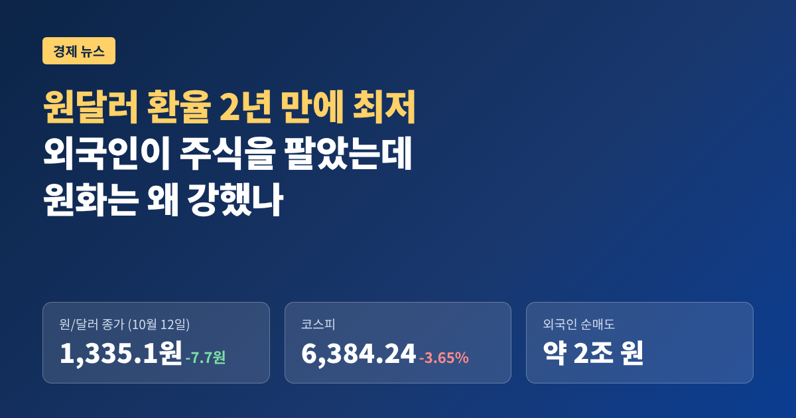
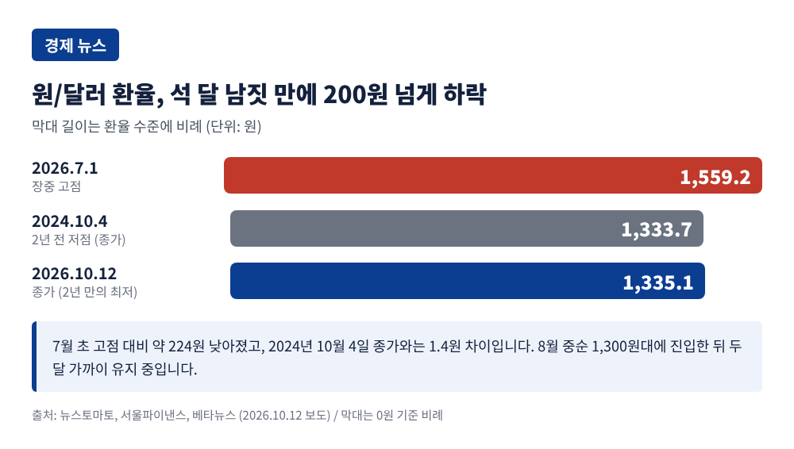
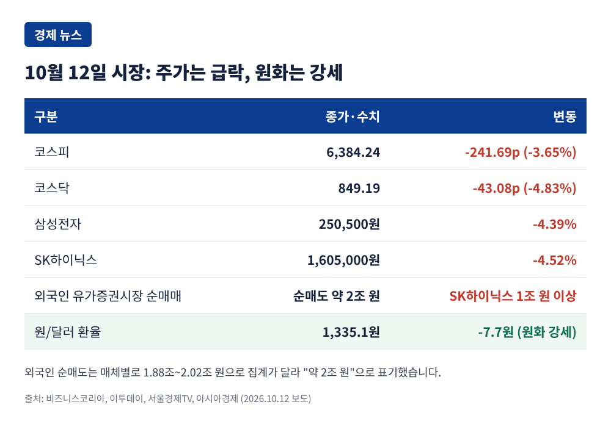
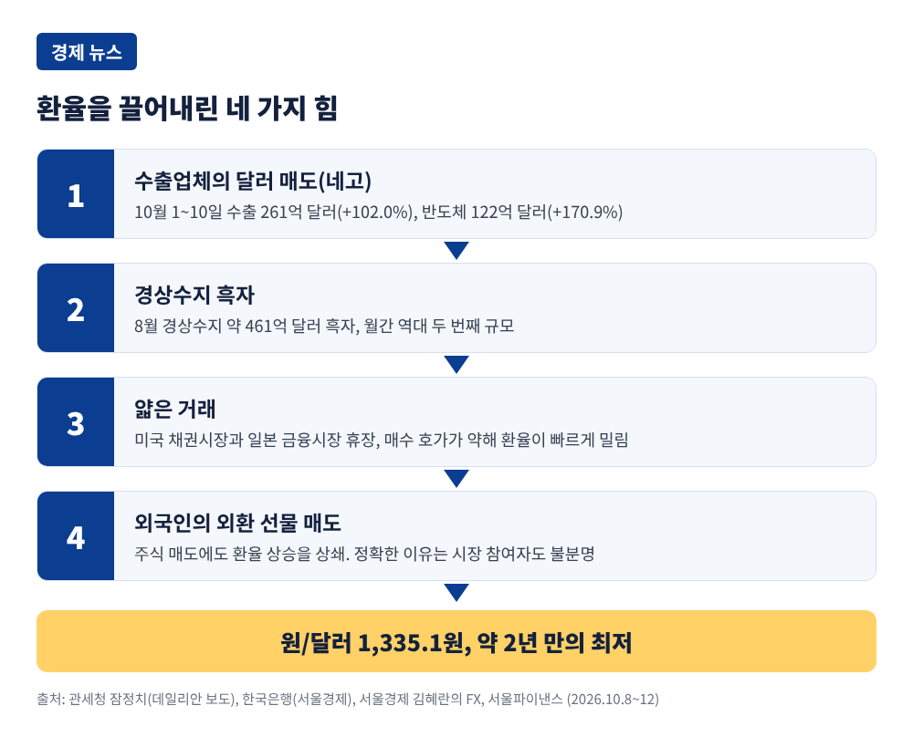
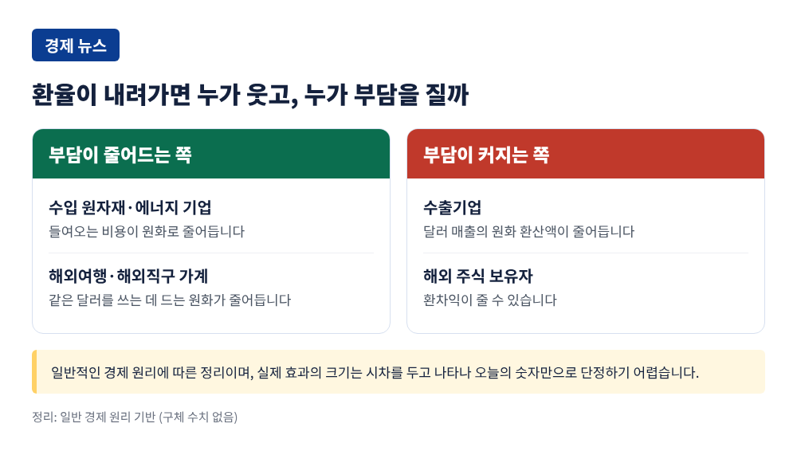

원달러 환율 2년 만에 최저, 외국인이 주식을 팔았는데 원화는 왜 강했나

이번 글에서는 10월 12일 원/달러 환율이 약 2년 만에 가장 낮아진 배경을 정리해 보겠습니다. 같은 날 코스피는 외국인 순매도로 3.65% 급락했습니다. 주가는 떨어지고 원화는 오른 이례적인 하루를 사실 위주로 짚어 봅니다.
■ 12일, 무슨 일이 있었나
12일 서울 외환시장에서 원/달러 환율은 1,335.1원에 거래를 마쳤습니다. 전 거래일보다 7.7원 내린 수준이고, 개장가는 1,342.5원이었습니다. 장중에는 1,332원 안팎까지 내려갔다고 복수 매체가 전했습니다.
종가 기준으로 2024년 10월 4일(1,333.7원) 이후 약 2년 만의 최저입니다. 올해 7월 1일 장중 1,559.2원까지 치솟았던 점을 떠올리면 석 달 남짓 사이 200원 넘게 내려온 셈입니다. 환율이 1,300원대로 내려온 것은 8월 중순이고, 이후 두 달 가까이 1,300원대를 유지하고 있습니다.

■ 주가는 무너졌는데 원화는 올랐습니다
같은 날 코스피는 241.69포인트(3.65%) 하락한 6,384.24로 마감했습니다. 코스닥은 4.83% 내려 849.19였습니다. 외국인은 유가증권시장에서 약 2조 원어치를 순매도했고, 그중 SK하이닉스가 1조 원 이상, 삼성전자가 5,300억 원 이상이었습니다. 삼성전자는 4.39%, SK하이닉스는 4.52% 떨어졌습니다.
한글날 연휴 동안 미국에서 AI 수익성에 대한 의구심이 커진 것이 부담으로 꼽힙니다. 오픈AI의 연환산 매출이 기대보다 200억 달러 적다는 보도가 있었다고 서울경제TV는 전했습니다. 이투데이는 올해 외국인의 누적 순매도가 약 196조 원에 이른다고 집계했습니다.
보통 외국인이 주식을 팔고 돈을 가져가면 원화를 팔고 달러를 사야 하므로 환율이 오릅니다. 그런데 이날은 반대였습니다. 다음 장에서 그 이유를 살펴보겠습니다.

■ 환율을 끌어내린 힘, 수출과 경상수지
가장 큰 힘은 수출업체의 달러 매도였습니다. 업계에서는 이를 '네고' 물량이라고 부릅니다. 해외에서 번 달러를 원화로 바꾸는 주문이 쌓이면 달러 공급이 늘어 환율이 내려갑니다.
관세청이 12일 발표한 잠정치로 10월 1~10일 수출은 261억 달러, 1년 전보다 102.0% 늘었습니다. 같은 기간 기준으로 역대 최대입니다. 반도체 수출은 122억 달러로 170.9% 늘었고, 전체 수출에서 차지하는 비중은 46.7%였습니다. 다만 잠정치여서 확정 과정에서 달라질 수 있습니다.
한국은행이 집계한 8월 경상수지는 약 461억 달러 흑자였습니다. 한 달 기준으로 역대 두 번째 규모입니다. 나라 밖에서 들어오는 달러가 나가는 달러보다 많다는 뜻이니, 원화에는 든든한 받침대입니다.
외환 딜러의 설명은 조금 더 구체적이었습니다. 서울경제에 따르면 한 은행 딜러는 네고 물량이 유난히 많았던 것은 아니지만, 사려는 주문이 약해 환율이 빠르게 밀렸다고 말했습니다. 이날 미국 채권시장과 일본 금융시장이 쉬어 거래가 얇았던 점도 낙폭을 키웠을 수 있습니다. 외국인이 외환 선물을 판 점도 한몫했습니다. 주가가 빠지면서 환헤지를 줄였거나, 경상흑자에 따른 원화 강세를 예상했다는 해석이 있지만 정확한 이유는 시장 참여자도 모른다는 것이 해당 기사의 설명입니다.

■ 달러가 강한데도 원화가 강했던 이례적 구도
이날 달러인덱스는 102.15 수준으로 낮지 않았습니다. 미국 10년물 국채금리는 이투데이 기준 약 5.24%였고, 10월 8일에는 10년물이 5.36%, 30년물이 5.73%로 2002년 이후 최고를 기록했다고 서울경제는 전했습니다. 9월 FOMC 의사록은 올해 추가 금리 인상 가능성을 다시 열어 두었습니다.
예전엔 미국 금리가 오르면 원화가 약해지는 것이 공식처럼 통했습니다. 지금은 수출과 경상흑자라는 국내 수급이 그 공식을 눌렀습니다. KB증권의 한 연구원은 달러가 견조해도 경상수지 흑자 확대와 성장 기대가 원화를 받치고 있다고 설명했습니다. 달러인덱스가 오른 것도 전반적인 달러 강세라기보다 프랑스 재정과 정치 우려에 따른 유로 약세 탓이 크다는 분석이 굿모닝경제에 실렸습니다.
■ 원/엔 840원대, 원화만의 이야기는 아닙니다
100엔당 원/엔 환율은 843.66원으로 마감했고, 장중 840.83원까지 내려갔습니다. 2008년 초 이후 약 18년 만의 최저 수준입니다. 이 하락에는 원화 강세뿐 아니라 엔화 약세가 함께 담겨 있습니다.
엔/달러는 158엔대입니다. 트레이딩이코노믹스는 한미일 금리차와 미국 금리 인상 기대가 엔화를 누른다고 보도했습니다. 모건스탠리도 8월 보고서에서 일본이 7월 말 개입으로 엔을 5% 가까이 끌어올렸지만 근본 요인이 바뀌지 않았다고 짚었습니다. 한쪽은 강해지고 한쪽은 약해진 두 힘이 겹쳐 840원대가 나온 셈입니다.
■ 한국은행 총재는 무엇이라 했나
신현송 한은 총재는 이날 국회 재정경제기획위원회 국정감사에서 환율 이야기를 했습니다. 문진석 민주당 의원이 환율 기준선을 낮출 방안을 묻자 오늘 1,330원대지만 “아직 예년보다 수준이 높다”며 원화가 더 강해질 여지가 있다고 답했습니다.
7월과 8월 두 차례 기준금리를 올린 것이 환율 안정에 “아주 큰 작용을 한 것 같다”는 평가도 내놓았습니다. 통화스와프를 환율 해법으로 보는 시각에는 신중했습니다. 상설 스와프가 있는 나라도 시장 상황에 따라 환율이 크게 움직인다는 이유였습니다. 한은은 업무현황 보고에서 7월 이후 원화가 주요국 통화보다 큰 폭으로 올라 상반기 약세 흐름을 되돌렸다고 자평했습니다.
■ 누구에게 유리하고 누구에게는 부담일까
환율 하락은 모두에게 같은 방향으로 작용하지 않습니다. 일반적인 경제 원리로 보면 수입 원자재와 에너지를 많이 들여오는 기업, 해외여행과 해외직구를 하는 가계는 부담이 줄어듭니다. 반대로 달러로 번 돈을 원화로 바꿔 받는 수출기업은 같은 매출이 원화로는 줄어듭니다. 해외 주식을 가진 투자자는 환차익이 줄 수 있습니다.
그렇다고 환율이 낮아진 것이 곧바로 물가 안정이나 수출 부진을 뜻하지는 않습니다. 환율이 물가와 수출에 미치는 실제 효과는 시차를 두고 나타나기 때문에, 오늘의 숫자만으로 단정하기는 어렵습니다.

■ 앞으로의 전망, 엇갈립니다
전문가들의 시각은 갈립니다. 한국투자증권은 4분기 환율 범위를 1,280~1,420원으로 제시했고, 큰 흐름에서는 하락 조정 가능성이 높다고 봤습니다. KB국민은행의 한 이코노미스트는 월 500억 달러 안팎의 경상흑자가 이어지면 2027년 상반기 말에서 하반기 초 사이 1,200원대 진입도 가능하다고 말했습니다. 달러 강세나 장기금리가 누그러지면 시점은 더 빨라질 수 있다는 단서가 붙었습니다.
신중론도 있습니다. KB증권의 한 연구원은 대외 여건이 약해 하락세가 이어질지는 의문이라고 했습니다. 굿모닝경제는 급락 뒤 수입업체의 결제 수요와 저가 매수로 단기 반등이 나올 수 있다고 봤습니다. 유럽 정치와 재정 불안, 미국 장기금리 5%대, 고유가도 달러를 다시 끌어올릴 변수입니다.
지켜볼 일정도 분명합니다. 대신증권 이경민 연구원은 증시 반등의 조건으로 미국 9월 소비자물가 발표에서 금리 부담이 풀리는 신호와 TSMC, ASML의 실적을 꼽았습니다. 현대차증권은 11월 이후 앤트로픽 상장이 끝나야 외국인이 본격적으로 돌아올 것이라고 내다봤습니다.
정리하면 이렇습니다. 12일의 환율은 주가가 아니라 수출과 경상흑자라는 실물 수급이 원화를 움직였다는 점을 보여 줍니다. 그렇다고 이 흐름이 계속 이어진다는 보장은 없습니다.
결국 남는 것은 하나입니다. 이번 환율을 정한 것은 주가도 달러도 아닌, 수출로 벌어들인 달러였다는 점입니다.
달러가 강한 가운데서도 원화가 버텨 낸 이 구도가 오래갈지는, 앞으로 나올 수출과 경상수지 숫자가 답해 줄 것입니다.
※ 이 글은 공개된 보도를 바탕으로 한 뉴스 해설이며, 특정 종목이나 통화에 대한 투자 권유가 아닙니다. 환율과 주가는 언제든 달라질 수 있고, 투자 판단과 그 결과의 책임은 투자자 본인에게 있습니다. 수치는 2026년 10월 12일 보도 기준이며, 잠정치는 이후 수정될 수 있습니다.
참고한 보도: SBS Biz, 뉴스토마토, 서울파이낸스, 베타뉴스, 아시아경제, 이투데이, 파이낸셜뉴스, 서울경제, 굿모닝경제, 비즈니스코리아, 서울경제TV, 데일리안, 트레이딩이코노믹스, 모건스탠리 (모두 2026년 10월 12일 전후 보도)